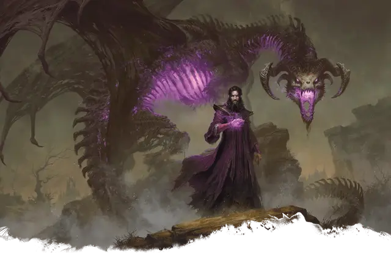

Саммастер (форма лича)
Sammaster (Lich Form)
Средняя Нежить (Волшебник), Хаотичная Злая, именной НИП

Класс Защиты 18 Инициатива +16 (26)
Хиты 322 (43к8 + 129)
Скорость 30 футов
| мод | спас | ||
|---|---|---|---|
| СИЛ | 12 | +1 | +1 |
| ЛОВ | 14 | +2 | +9 |
| ТЕЛ | 16 | +3 | +10 |
| мод | спас | ||
|---|---|---|---|
| ИНТ | 23 | +6 | +13 |
| МДР | 15 | +2 | +9 |
| ХАР | 21 | +5 | +5 |
Сопротивление урону Кислота, Холод, Электричество
Иммунитеты Некротический, Яд; Испуганный, Истощение, Отравленный, Очарованный, Парализованный
Чувства Тёмное зрение 120 футов, пассивное Восприятие 19
Языки Общий, Драконий, Инфернальный
Опасность 22 (41 000 опыта; БВ +7)
Особенности
Легендарное сопротивление (3/день). Если Саммастер проваливает спасбросок, он вместо этого может в нём преуспеть.
Подавление жизни. Существа в пределах 60 футов от Саммастера не могут восстанавливать Хиты.
Сопротивление магии. Саммастер совершает с Преимуществом спасброски от заклинаний и прочих магических эффектов.
Камень души. Если Хиты Саммастера опускаются до 0, а его камень души не уничтожен, то Саммастер в форме лича рассыпается прахом и спустя 1к10 дней появляется в пространстве камня души в форме драколича; его статистика меняется на статистику Саммастера (форма драколича).
Камень — это Крошечный предмет с КЗ 20, 50 Хитами и Иммунитетом к Некротическому, Психическому урону и урону Кислотой и Ядом. Камень восстанавливает все свои Хиты в конце каждого хода, но рассыпается в пыль, если его Хиты опускаются до 0. Если камень будет уничтожен, Саммастер может создать новый, совершив 8-часовой ритуал, требующий самоцвет стоимостью не менее 1000 ЗМ и затрачивающий 5 000 ЗМ на иные материалы.
Действия
Мультиатака. Саммастер совершает три атаки Едким всплеском или Парализующим касанием в любой комбинации. Он может заменить две атаки одним использованием Сотворения заклинаний.
Едкий всплеск. Бросок рукопашной или дальнобойной атаки: +13, досягаемость 5 фт. или дистанция 120 фт. Попадание: 38 (5к12 + 6) Некротического урона или урона Кислотой (по выбору Саммастера).
Парализующее касание. Бросок рукопашной атаки: +13, досягаемость 5 фт. Попадание: 16 (3к6 + 6) урона Холодом, и цель Парализована до начала следующего хода Саммастера.
Сотворение заклинаний. Саммастер (форма лича) сотворяет одно из следующих заклинаний, не нуждаясь в Материальных компонентах (заклинательная характеристика — Интеллект, Сл спасброска заклинаний 21):
Неограниченно: Волшебная рука, Конус холода, Невидимость, Обнаружение магии, Рассеивание магии, Фокусы
2/день каждое: Разговор с мёртвыми, Силовая стена
1/день каждое: Дезинтеграция, Слово силы: смерть, Сотворение нежити, версия 8-го уровня
Реакции
Защитная магия. Саммастер сотворяет Контрзаклинание или Щит в ответ на условие этого заклинания (заклинательная характеристика — та же, что для Сотворения заклинаний).
Легендарные действия
У этого существа есть 3 использования Легендарных действий; оно может немедленно после окончания хода другого существа потратить одно использование, чтобы совершить одно из следующих действий. Существо восполняет все потраченные использования в начале каждого своего хода.
Смертельный телепорт. Саммастер телепортируется в видимое им в пределах 60 футов незанятое пространство, и каждое существо в пределах 10 футов от покинутого им пространства получает 19 (3к12) Некротического урона.
Растворение. Саммастер совершает одну атаку Едким всплеском.
Ужасающее присутствие. Спасбросок Мудрости: Сл 21, каждое существо в 20-футовой Эманации, исходящей от Саммастера. Провал: 13 (2к12) Психического урона, и цель Испугана до конца своего следующего хода. Провал или успех: Саммастер не может совершить это действие повторно до начала своего следующего хода.
Бонус мастерства +7
Саммастер
Лич — основатель культа драколичей
Саммастер основал и возглавил Культ Дракона — тайную злую организацию, посвятившую себя превращению живых драконов в немёртвых обитателей грядущего, лишённого жизни мира. Саммастер был убит много веков назад, но ныне существует как лич, чья сущность привязана к облику могучего драколича.
История
Саммастер, невероятно умный волшебник, родился много столетий назад. Он быстро учился, странствуя от одного наставника к другому, и в основном изучал магию, связанную с драконами. Узнав всё, что могли дать другие архимаги, в том числе Эльминстер и Алустриэль Серебряная Длань, Саммастер обратился к новым рубежам — к некромантии и магии подчинения. Он изобрёл способ превращать драконов в драколичей, магически порабощать их и научился ввергать драконов по всему Фаэруну в неистовое безумие. Свой интеллект он считал стоящим выше морали и со временем стал подозрительным, злобным и одержимым манией величия.
Странствия свели Саммастера с людьми, почитавшими драконов как воплощение первозданной силы. Выдав своё желание властвовать над драконьим родом за восхищение им, Саммастер объявил себя вождём этих разрозненных фанатиков, назвав их Культом Дракона. Он извратил их увлечение своими некромантическими знаниями, открыв им, что драколичам суждено править Фаэруном. Его Культ Дракона посвятил себя помощи злым драконам в становлении драколичами, чтобы приблизить наступление жуткой новой эры.
Саммастер погиб в бою, но заранее подготовился к такой участи. Он воспользовался извращённым возрождением, свойственным драколичам, и сам стал личём. Он по-прежнему руководит Культом Дракона из тени, изобретая новые способы подчинять и развращать драконий род.
Личность
Саммастер предстаёт обаятельным и привлекательным, но не может долго скрывать свою болезненную одержимость драконьей нежитью. Его единственные настоящие союзники — ближний круг Культа Дракона, от которого он требует беспрекословного подчинения.
Саммастер редко задерживается на одном месте надолго, считая, что никто не сможет следить за делами Культа Дракона по всему Фаэруну лучше, чем он сам. Он лично проверяет важнейшие замыслы культа и часто застаёт своих приспешников врасплох внезапным появлением.
Вместо филактерии, как у обычных личей, Саммастер хранит магический камень души — как у драколичей. Когда его тело лича уничтожают, Саммастер возрождается в облике драколича, и камень души становится его сердцем. Навсегда уничтожить его можно, только одолев его в облике драколича и разрушив камень души прежде, чем тот снова превратит его в лича.
В прошлом многие герои уже мнили себя победителями Саммастера, но хитрый волшебник всякий раз возвращается и направляет Культ Дракона к исполнению всё более отчаянных и зловещих замыслов.
Как использовать Саммастера
Саммастер — грозный противник в кампании, посвящённой Культу Дракона. Он часто путешествует по всем Забытым Королевствам и проверяет ячейки культа, что даёт персонажам возможность повзаимодействовать с ним лично — даже в низкоуровневых приключениях. За незначительной деятельностью культистов может скрываться зловещая тень Саммастера и его куда более грандиозные замыслы.
Прямое же столкновение с Саммастером станет эпической кульминацией всей кампании. Однако Саммастера не так-то просто победить даже единожды, а благодаря камню души он может не раз возвращаться и угрожать Фаэруну, если только персонажи не найдут способ уничтожить камень души.